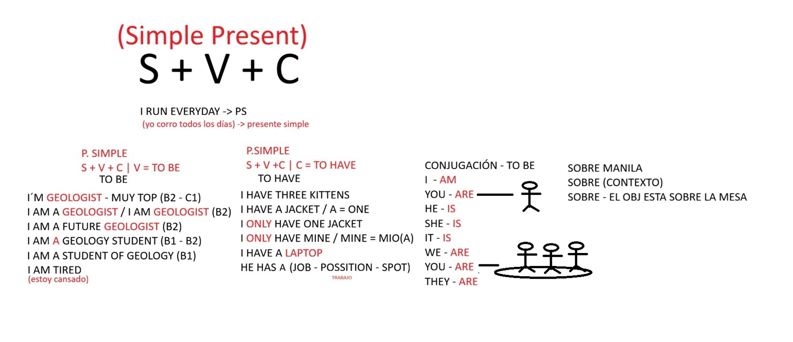
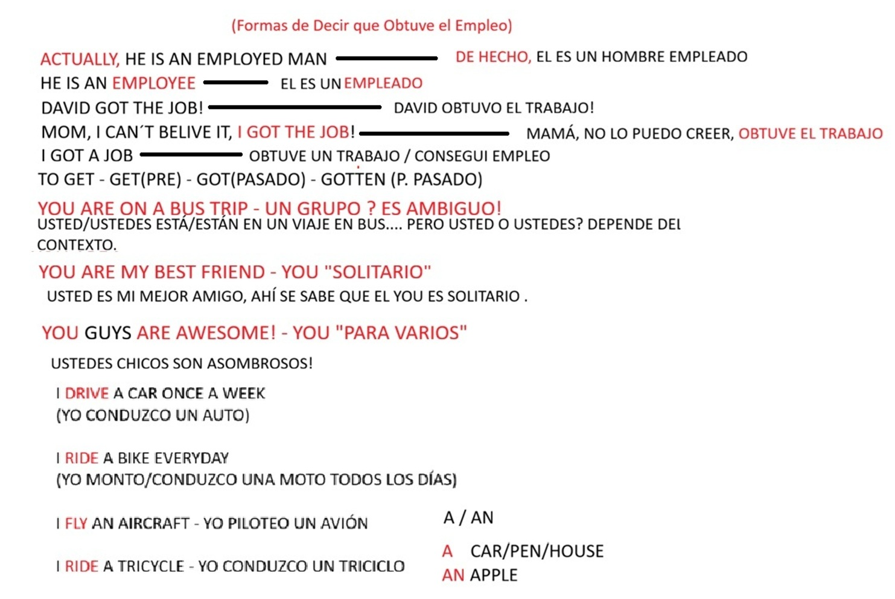
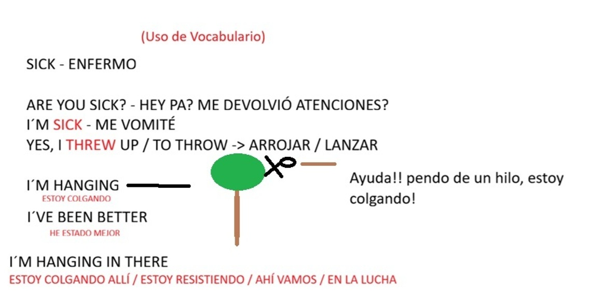
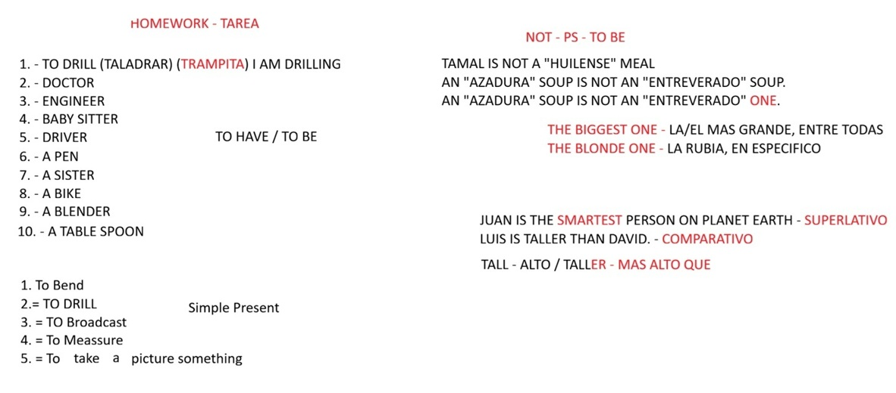
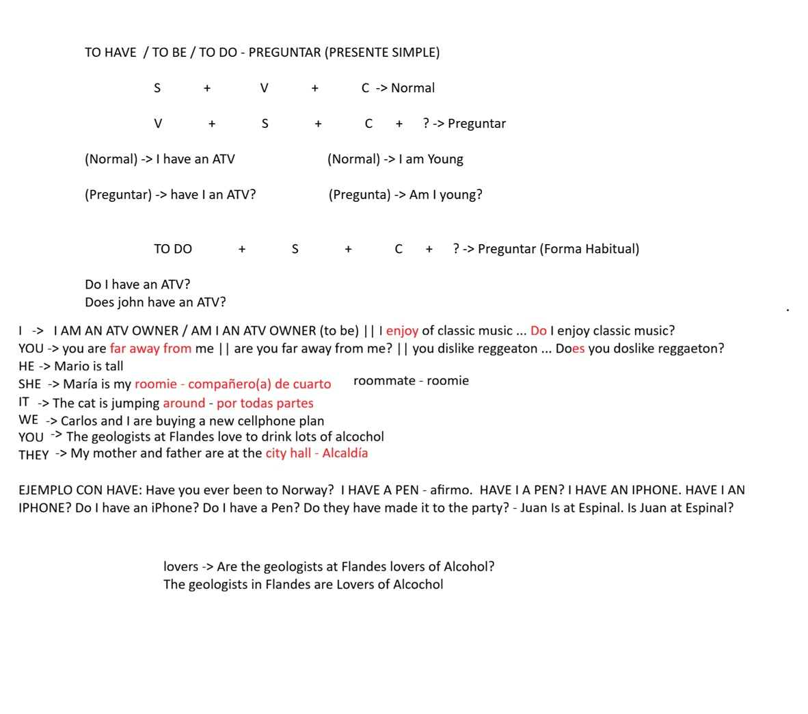

Verbo 'To Be' - Presente Simple
Recordar la regla fundamental para conjugar el verbo ser/estar dependiendo del pronombre:

- I ➡️ AM
- You ➡️ ARE
- He / She / It ➡️ IS (Tercera persona del singular)
- We / You / They ➡️ ARE (Plurales)
Reglas de Oro - Clase 2
1. El uso de artículos: "A" vs "An"
Usamos el artículo para evitar sonar como "Yo soy geología estudiante". Recuerda la regla del sonido:
- A (Antes de sonido consonante): I am a geologist. (Soy un geólogo).
- An (Antes de sonido vocal): We found an emerald. (Encontramos una esmeralda).
2. Verbo 'To Have' (Posesión vs. Logro)
Aunque "I have a job" (Tengo un trabajo) es correcto, para sonar como un nativo cuando consigues un puesto nuevo, usamos el pasado de get:
- ✅ I got a job! (¡Me dieron el trabajo! / Fui contratado)
3. Negaciones con 'To Be'
El "not" SIEMPRE va después del verbo To Be.
- The Romeral fault is not safe. (La falla de Romeral no es segura).
- We are not tired. (No estamos cansados).
4. Expresar la Edad y Estados
En inglés la edad no se "tiene", se "es". Los estados de ánimo o salud son adjetivos, no verbos.
- Edad: I am 23 years old. (NO "I have 23 years").
- Estado Físico: I'm hanging. (Modismo: "Estoy colgando / En la lucha / Resistiendo").
Pizarras de la Clase
Haz clic en los apuntes para repasarlos a pantalla completa.
To Be y Simple Present

I got the job & Drive/Ride

Expresiones: Sick & Hanging

Negaciones y Comparativos

Reglas de Oro - Clase 3
1. Pasado del Verbo 'To Be'
El pasado del verbo To Be se divide en solo dos formas. Olvida el am/is/are, en el pasado solo existen:
- He / She / It / I ➡️ WAS (I was, He was).
- We / You / They ➡️ WERE (They were at the park).
2. Negaciones en Pasado (El auxiliar 'Did')
Cuando usas el auxiliar did not (didn't) para negar en pasado, ¡el verbo principal vuelve al presente (infinitivo)! El auxiliar ya hace el trabajo del pasado.
- ❌ I didn't went. (Incorrecto: doble pasado).
- ✅ I didn't go to the party. (Correcto).
Pizarra de la Clase 3: Preguntas (To Have / To Be / To Do)
Haz clic en la imagen para ampliar la explicación sobre cómo estructurar preguntas.

Reglas de Gramática y Vocabulario - Clase 4: El Kit de Herramientas
En esta clase no conjugamos tiempos verbales, sino que aprendimos a "conjugar" o mutar la estructura de las palabras usando el English Field Log. Aquí tienes las reglas para extraer el máximo significado en el campo.
1. Familias de Palabras (Morfología)
Las palabras mutan alterando su terminación para convertirse en Sustantivos, Verbos o Adjetivos. Regla clave: La familia va condicionada a la raíz; no todas las palabras tienen su equivalente en adverbio o adjetivo, algunas solo llegan a sustantivo.
| Verbo (Acción) | Sustantivo (Cosa / Persona) | Adjetivo (Característica) |
|---|---|---|
| To extract (Extraer) | Extraction / Extractor | Extractive (Extractivo) |
| To innovate (Innovar) | Innovation / Innovator | Innovative (Novedoso) |
| To survey (Topografiar) | Survey / Surveyor | - |
| To drill (Perforar) | Drilling / Driller | - |
2. Reglas de Combinación: Chunks vs. Collocations
- Chunks (Bloques Útiles): Son frases prefabricadas e inseparables. Cada palabra por separado pierde el sentido en ese contexto; o se dice bien, o no funciona (como un dicho). Ej: "As a matter of fact" (De hecho).
- Collocations (Asociaciones): Son combinaciones naturales pero maleables. Puedes cambiar una palabra de dirección o intensidad manteniendo la unidad de significado. Ej: Move forwards / Move backwards (Avanzar/Retroceder) o Speed up / Speed down (Acelerar/Frenar).
3. La Gramática Invisible: Patrones de Acento (Stress)
En inglés no hay tildes visuales, pero el "golpe sísmico" o la fuerza de la voz cambia por completo la identidad de la palabra. Desplazar el acento es una forma de conjugar:
- PROject (La fuerza al inicio) ➡️ Sustantivo: El proyecto de exploración.
- proJECT (La fuerza al final) ➡️ Verbo: Proyectar o estimar datos.
Reglas de Oro - Clase 5: Rompiendo Palabras
Las palabras en inglés funcionan como rocas sedimentarias: tienen un núcleo (raíz) al que se le pegan capas frontales y finales. Así adivinas su significado sin traductor.
1. Accesorios Frontales (Prefijos / Prefixes)
- Anti- (En contra de): Anti-corrosion (Anticorrosivo).
- Pre- (Antes de): Pre-drill (Perforar previamente).
- Mis- (Mal / Equivocado): Mis-calculate (Calcular mal).
- De- (Quitar / Reducir): De-contaminate (Descontaminar).
- Un- (Lo opuesto / No): Un-stable (Inestable).
- Sub- (Por debajo de): Sub-surface (Subsuelo).
2. Accesorios Finales (Sufijos / Suffixes)
Agarras una acción (Verbo) y la conviertes automáticamente en el nombre del trabajador o en una característica de la roca.
- -er / -or (El que hace la acción - Profesión): Explor-er (Explorador) | Survey-or (Topógrafo).
- -able (Que se puede - Adjetivo): Predict-able (Predecible).
Reglas de Oro - Clase 6: El Tiempo y la Zona sin -ING
1. Usos del Presente Simple
- Trabajo Diario (Rutinas): I work at the mine every day.
- Verdades Absolutas (Ciencia): Water causes erosion.
- Futuro Programado (Turnos/Transporte): The helicopter arrives soon. (Llega pronto).
2. La Zona sin "-ING" (Verbos de Estado)
Verbos de la mente, emoción o posesión (think, love, hate, know, need) NO aceptan el "-ing" aunque estén pasando ahora mismo.
- ❌ I am knowing the location.
- ✅ I know the exact location.
3. El Orden Estricto de las Palabras (Adverbios)
Los medidores de frecuencia (always, rarely, sometimes) tienen una regla de oro en su posición:
- Con verbo NORMAL: Va ANTES del verbo. (We always wear helmets).
- Con verbo TO BE: Va DESPUÉS del verbo. (The rocks are always heavy).
4. Modismos de Frecuencia (Inglés Real)
- Once in a blue moon: Rara vez / Casi nunca (Ej: Once in a blue moon I drink rum).
- Every now and then: De vez en cuando.